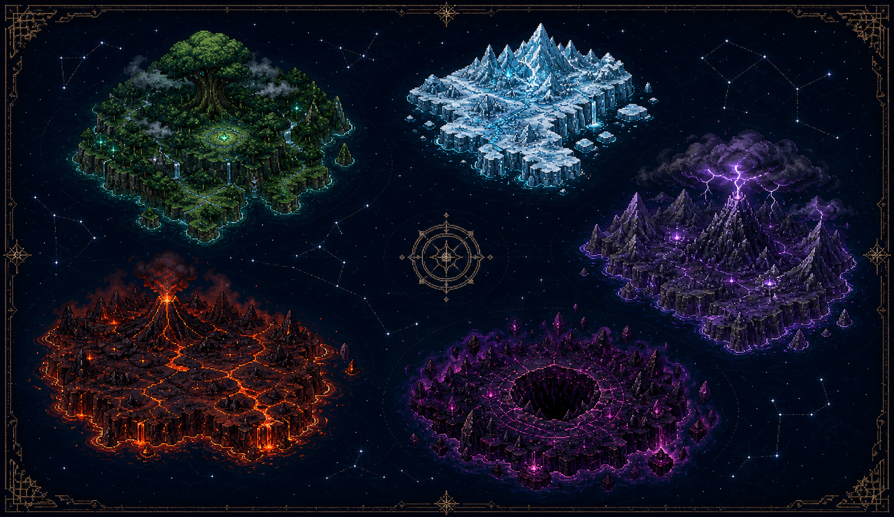

LV.1失忆的星灵使者
100 / 100
100 / 100
0 / 100
星火营地安全区探索 100%
◉ 0✧ 0
巨木守卫
当前目标
在营地选择远征大陆
五枚失控核心 · 二十五层远征
像素纪元
五域远征
从一把破旧铁剑开始，穿越迷雾、熔火、冰原、雷峰与深渊。
正在校验并加载游戏资源…
尚无存档
WASD 行走 · 双击方向奔跑 · J 自动预瞄攻击 · R/F 主动战技 · F5 快速保存
✦
星门航图
选择远征大陆
每片大陆包含 5 个连续深度。阵亡会返回营地，但资源、装备与成长永久保留。

星灵档案
角色与背包
已装备
战斗属性
悬停对比身上装备，点击换装。背包每页 30 格。
1 / 4
远征材料
用于锻造、强化、重铸与药剂炼制消耗品
为卷轴、食物与战斗道具预留Tab 区域观测
远征区域地图
探索进度 0%白：人物 红：怪物 青：资源 金：传送阵
1.0×
主动动作与被动成长 · 可用天赋点 0
星灵战技与天赋星盘
被动天赋星盘
星火营地
元素铁匠铺
远征暂停
让星火稍作休息
声音、存档与操作说明
游戏设置
声音
背景音乐控制首页、营地与各关卡常驻 BGM
战斗音效攻击、受击、掉落与锻造音效
存档
操作与战技
WASD移动；快速双击同方向进入四帧奔跑
J自动锁定无遮挡的高威胁目标并施放三段普通攻击
长剑平砍 → 反向平砍 → 发射可穿透剑气
长枪直刺 → 挑飞并短暂控制 → 人枪一体突进
战斧横劈 → 重劈 → 原地旋转一周造成范围伤害
冰杖星弹 → 强化星弹 → 三向可穿透星弹
双匕首疾刺 → 反手斩 → 带三段独立判定的瞬影连击
R当前武器专属战技：长剑回旋、长枪突阵、战斧震击、星杖散射或双刃瞬杀
F星爆术：攻击周身敌人并发射十二道星屑
空格 / Q闪避 / 使用生命药水
I / K背包 / 战技与天赋
Tab / M区域地图 / 营地大陆星图
L / F5存档列表 / 快速保存
自动存档 + 三个手动档位
星火存档列表
F5 / Ctrl+S 写入自动存档。手动档位会保留角色、背包和当前远征位置。
星火未熄
远征暂告失败
你带回了本次收集的材料，整备后可以再次出发。